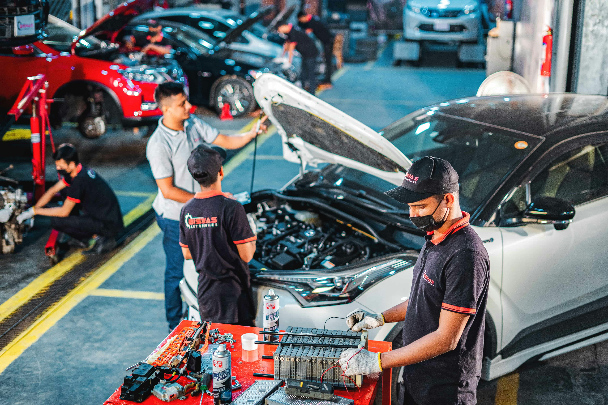
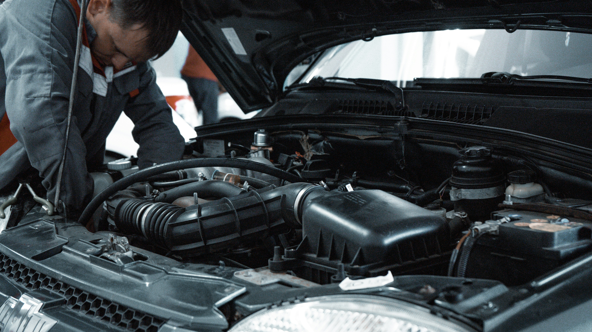

O nás
Autopolis je spolehlivý autoservis pro osobní automobily.
Provádíme pravidelnou údržbu, opravy i přípravu vozidel na technickou kontrolu.
Našimi zákazníky jsou řidiči, kteří chtějí mít svůj vůz v dobrém technickém stavu.
Naše práce

Opravy a servis automobilů

Profesionální servisní práce

Kontrola a opravy motoru
Kontakt
Adresa: Novákova 25, Praha 10
Telefon: 777 123 456
E-mail: info@autopolis.cz
Otevírací doba
- Pondělí–Pátek: 8:00–17:00
- Sobota: 9:00–12:00
- Neděle: Zavřeno